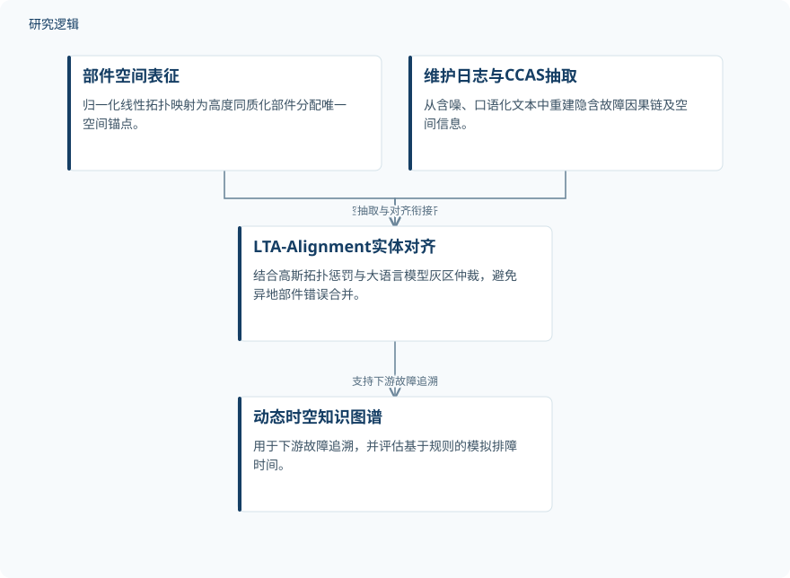

摘要解读
面向带式输送机维护的线性拓扑感知对齐框架
A Linear Topology-Aware Alignment Framework for Belt Conveyor Maintenance Knowledge Graph.
解读更新 2026-10-18 10:05 · 依据公开摘要整理，未核验全文细节
长距离带式输送机的部件描述可能相似，位置却不同；如何避免知识图谱把它们混为一谈，并从口语化维修记录中还原故障关系？本文摘要介绍了一种结合线性空间拓扑与大语言模型的对齐框架，并报告其在故障追溯任务中的评估结果。
文章目录
位置差异为何会被知识图谱抹平
长距离带式输送机的维修知识图谱构建面临空间混淆与语义坍塌：不同物理位置的部件，可能在文字描述上高度相似；非结构化维修记录又可能嘈杂、口语化，省略故障因果链和空间信息。研究因此聚焦于如何同时保留部件的空间位置与维修语义，避免相似描述导致错误合并。
用空间锚点和维修语义协同对齐
摘要称，框架构建了 Physical–Space–Fault–Rule 本体，并以归一化线性拓扑映射为高度同质的部件分配唯一空间锚点。针对维修日志，Condition–Constraint–Action–Space（CCAS）机制从非结构化文本中提取信息，重建隐含故障因果链与空间信息。
为减少不同位置的相似部件被错误合并，LTA-Alignment 将高斯拓扑惩罚与基于大语言模型的灰区仲裁结合。摘要还介绍了一套结构化金标准标注方案，其依据包括维修日志、BOM 记录、空间锚点和闭环维修证据。
依据摘要整理的研究过程示意


仅概括摘要明确陈述的方法环节与评估对象，不表示未报告的实验配置或结果。
下载 SVG图示关系说明
实线表示相邻阶段的信息流，虚线表示跨阶段联系或反馈。
维修日志与部件信息 → 线性拓扑映射：定位部件；维修日志与部件信息 → CCAS信息抽取：抽取日志；线性拓扑映射 → 拓扑感知对齐：提供空间锚点；CCAS信息抽取 → 拓扑感知对齐：提供故障语义；拓扑感知对齐 → 故障追溯评估：用于追溯
摘要报告了抽取、对齐与追溯表现
在三次预设运行中，CCAS 的全局 F1-score 为 94.10 ± 0.56%，比 T5 高 6.20 个百分点。LTA-Alignment 的 Merge F1-score 为 95.75 ± 0.53%，实体簇纯度为 96.70 ± 0.53%；相较 SCSA，分别高 3.36 和 3.90 个百分点。
在下游故障追溯中，动态时空知识图谱的 Accuracy@1 为 92.78 ± 0.36%，比 R-GCN 高 10.16 个百分点。相较 Keyword Retrieval，基于规则的模拟故障排查时间估计减少 68.50 ± 0.73%。这些结果对应摘要所述的非分支带式输送机维护场景。
摘要结果的适用范围仍需结合全文判断
摘要将评估描述为三次预设运行，但没有说明这些运行如何划分、数据规模或场景构成；因此，单凭摘要无法判断评估样本的代表性及结果在其他输送机系统中的可迁移程度。
摘要也未提供基线的具体配置、完整评估流程或独立外部验证信息。故障排查时间的降幅被表述为相对于 Keyword Retrieval 的规则模拟估计，不应直接解读为实际现场节时效果；这些方面是否在论文其他部分报告，需进一步阅读确认。
阅读启发：空间信息如何支撑维修追溯
阅读启发：这项工作把部件所在位置作为区分相似实体的重要信息，并将日志抽取、实体对齐与故障追溯联系起来。进一步阅读时，可关注金标准标注如何利用闭环维修证据，以及三次预设运行和各基线比较的具体设置；这些细节有助于理解摘要所报指标适用的范围。
以上为本站阅读启发与建议，不是论文已验证的结论。